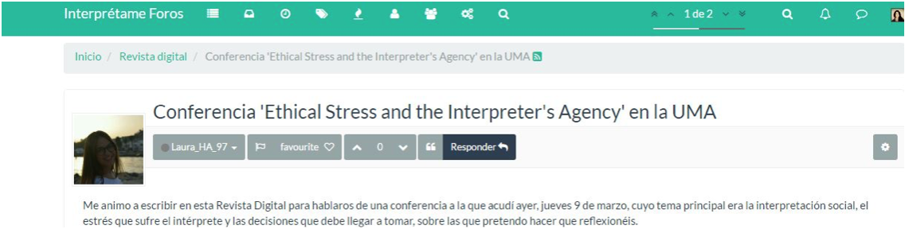
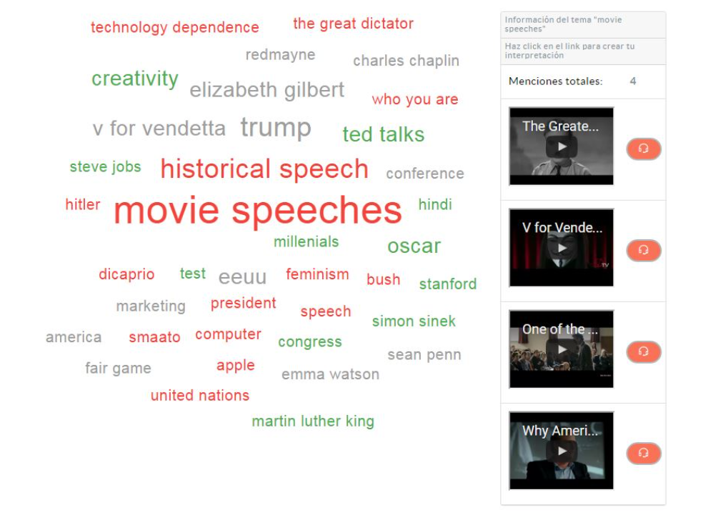
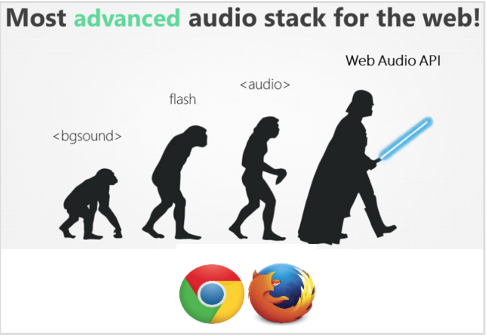

Breaking news from Interprétame! Our colleague Laura Heredia (@Laura_HA_97) took the plunge and dived into our digital magazine Revista digital to introduce us to the field of social Interpreting and the ethical dilemmas of our profession. https://goo.gl/7SGls6
The interesting excerpt from the conference Ethical Stress and the Interpreter's Agency Laura presented us with has already received over 500 visits and sparked a lively debate centered on attitudes towards the so-called hate speech. If you have no idea what we are talking about, this article may shed some light and raise new questions; if you do have an opinion on this matter, we'd love for you to share it in the comments below.
On the other hand, Interprétame's cloud of tags keeps growing and revealing the tastes of the community. Check out the section Explora and be seduced by the speeches other users have been interpreting these last few weeks. (https://www.interpretame.com/discover).
As you can see, it's not only conferences you can turn to. The film industry is also a great source of speeches you may not have considered. V for Vendetta, The Great Dictator or Fair Game are some of the films whose most famous speeches you can find by clicking on the tag “movie speeches”. A fun exercise to enjoy Interpreting through seventh art.
As for technical innovations, in our last notification on the forum ( https://forums.interpretame.com/topic/12/funcionamos-en-chrome-y-firefox) we shared the reason why Chrome and Firefox are your allies when creating Prets. To put it in a nutshell, the technology our platform uses to record and manage audio easily and from anywhere — Web API Audio — is a breakthrough other browsers, such as Safari, do not yet support.
Moving through the platform you will immediately realize that the interface style is much more attractive and intuitive in the new version (v1.1.0) we updated last week. Among other improvements, we removed the pop-ups and replaced them by explanatory messages not invasive and fully integrated on the site.
In additions, from now on (https://www.interpretame.com/wiki/) not only will you be able to access all newsletters and download them in PDF but also to get the English versions by clicking on a new button on the right top bar.
To close this newsletter, we'd like to share a piece of news we are sure you'll be excited about: we are preparing a free webinar to navigate together the platform and give you the opportunity to ask "face to face" all the questions you may have. We will inform you shortly about the exact date, but we can already tell you it's going to take place in April. ☺ Do spread the word if you know people interested!
Greeting and, as always, do not hesitate to contacting us for whatever you may need.